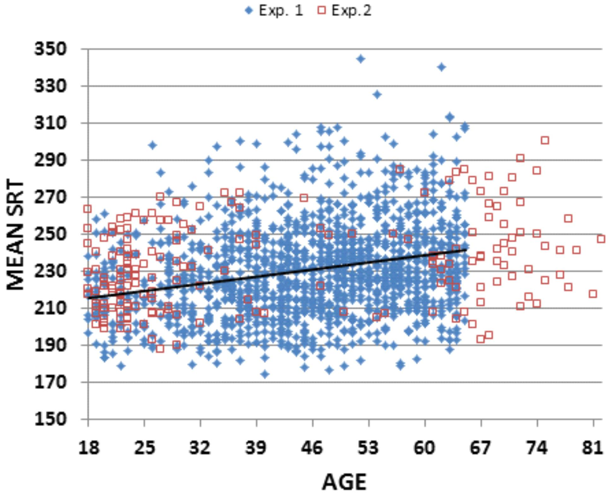

Reaction time test!
Click to begin
When area turns green, click
Too early!
Do not cheat, click only after you see green!
Click to try again
Your reaction time:
ms
Click to try again
Average:
0
ms |
0

Reaction time
For college-age individuals, reaction times to light stimuli have been published as 190 milliseconds, or 0.19 seconds, and to auditory stimuli as 160 milliseconds, or 0.16 seconds. Human reaction times vary according to the type of stimuli, the method of measurement and the particular study's results. A study published by the Journal of Athletic Training in 2010 found that NCAA athletes had a 0.203-second reaction time on average. This test used a falling meter stick as a stimulus. When the results were measured with a computer, they were noticeably slower, with an average reaction time of 0.268 of a second, according to a literature review done by Clemson University researchers. Many repeated trials with each individual in a fairly large test group must be done to produce reliable data. A study published in 1899 by the Journal of the Anthropological Institute determined that humans have a faster reaction time to auditory stimuli as opposed to visual stimuli. The more complex the response individuals have to perform, the slower their reaction time will be, suggesting that a more complex answer requires more cognitive activity and, therefore, an inherently longer reaction time. A test published in 1907 by the Archives of Psychology provided evidence that if a stimulus is stronger, the reaction time will be quicker. Some sexual dimorphism may exist in reaction times, particularly to auditory stimuli, according to a study published in 2011 by PLOS ONE. Beijing Olympic runners were measured for their reaction times, and the results concluded that male runners had an average reaction time of 166 milliseconds, or 0.166 of a second, while female runners had an average of 189 milliseconds, or 0.189 of a second. In this same test, researchers determined that in one out of 1,000 starts, a male and female sprinter could achieve a reaction time of 109 milliseconds and 121 milliseconds respectively.
Human Tester
Ivica Dereh, 4.5, Gimnazija Andrije Mohorovičića